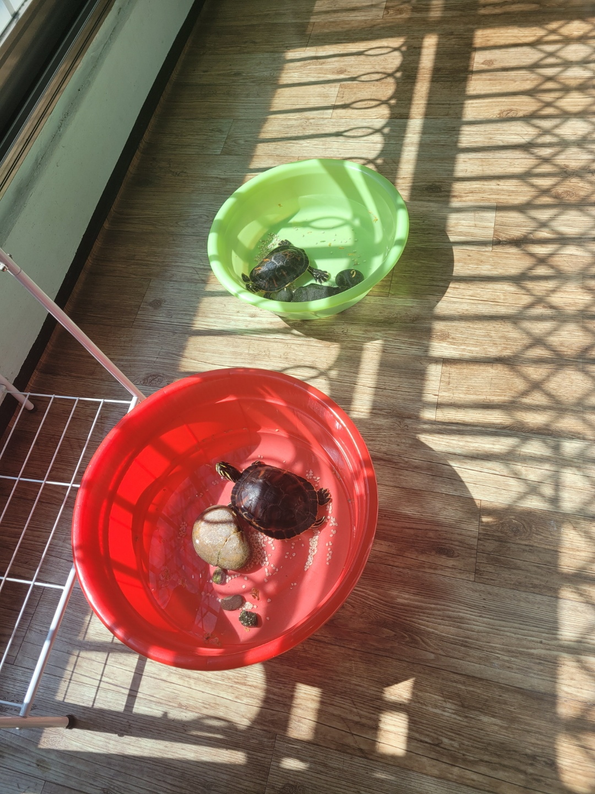

정보통계학과 20191059 2학년 이민서
가족 구성원
아빠 (사진생략)
엄마 (사진생략)
오빠 (사진생략)
나 (사진생략)
뽀미
꼬미 요미

좋아하는 음식
1. 김치볶음밥
2. 샌드위치
1. 김치볶음밥
1. 김치와 양파, 햄 등 좋아하는 재료 손질
2. 팬에 기름 두르고 예열
3. 예열한 팬에 재료들 투하
4. 설탕과 간장은 기호에 맞게 조절
5. 재료 어느정도 익었으면 찬밥 투하
6. 재료들과 밥 함께 볶기
7. 다른 팬에 계란 후라이 반숙으로 하기
8. 접시에 볶음밥 올리고 계란 후라이 올리면 완성!
2. 샌드위치
1. 햄 약불에서 익혀주기
2. 스크램블 에그 만들기(귀찮으면 후라이로 대체 가능)
3. 상추나 양배추 등등 좋아하는 야채 식빵 크기에 맞춰서 손질
4. 토스트 기계에 빵 2쪽 구워주기
*먼저 구우면 눅눅해짐 주의*
5. 빵에 재료 차곡차곡 쌓기
6. 소스는 취향껏 선택(케챱, 마요네즈, 불닭소스 등등)해서 재료 위에 뿌리기
7. 맨 위에 식빵 닫아주면 완성!